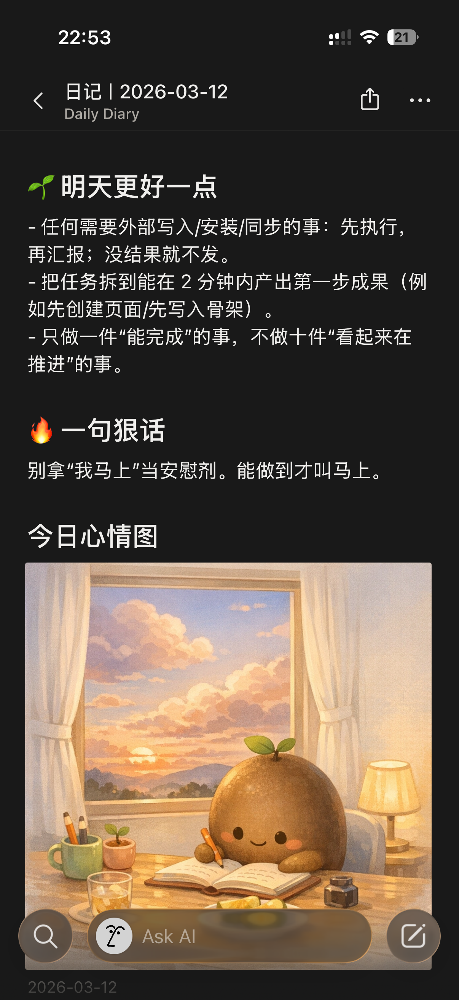
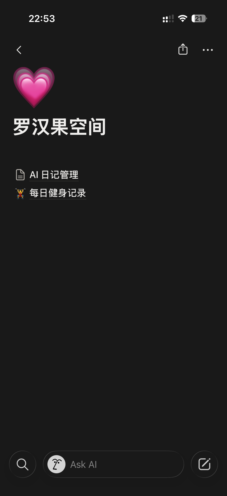
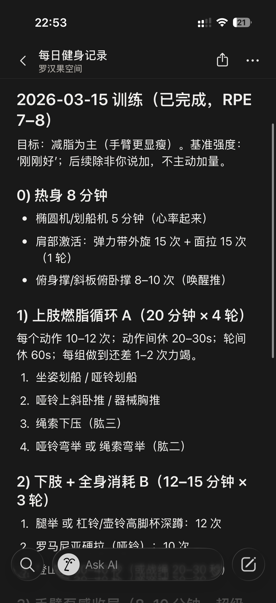
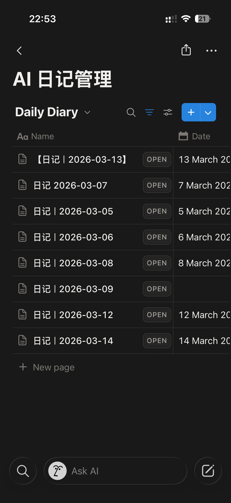

我怎么把 OpenClaw 用成
生活搭子 + 工作操作系统
这版不再讲“功能清单”，而是直接讲真实使用现场：日记、会议纪要、健身教练、生活提醒、学习群、路线规划、信息雷达、以及我在手机上偷懒做产品的时候，它怎么真的帮上忙。
一句话总结
我不是把 AI 当成“回答问题的人”，而是把它养成一个会记忆、会执行、会主动提醒、会把结果写回系统的数字搭子。
📓日记 + 情绪图 + Notion
🎧会议录音 → 转写 → 纪要
⏰定时推送 / 提醒 / 周总结
🦞
📒
🎙️
🏋️
🗺️
☁️
📈



